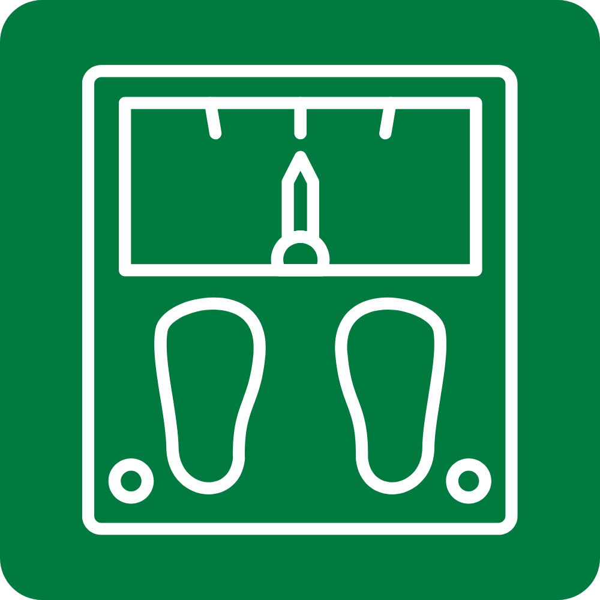
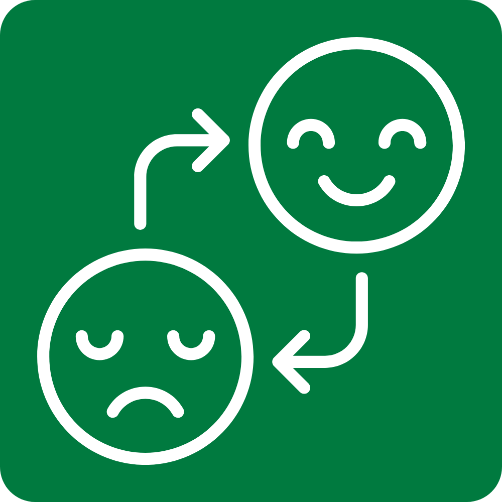
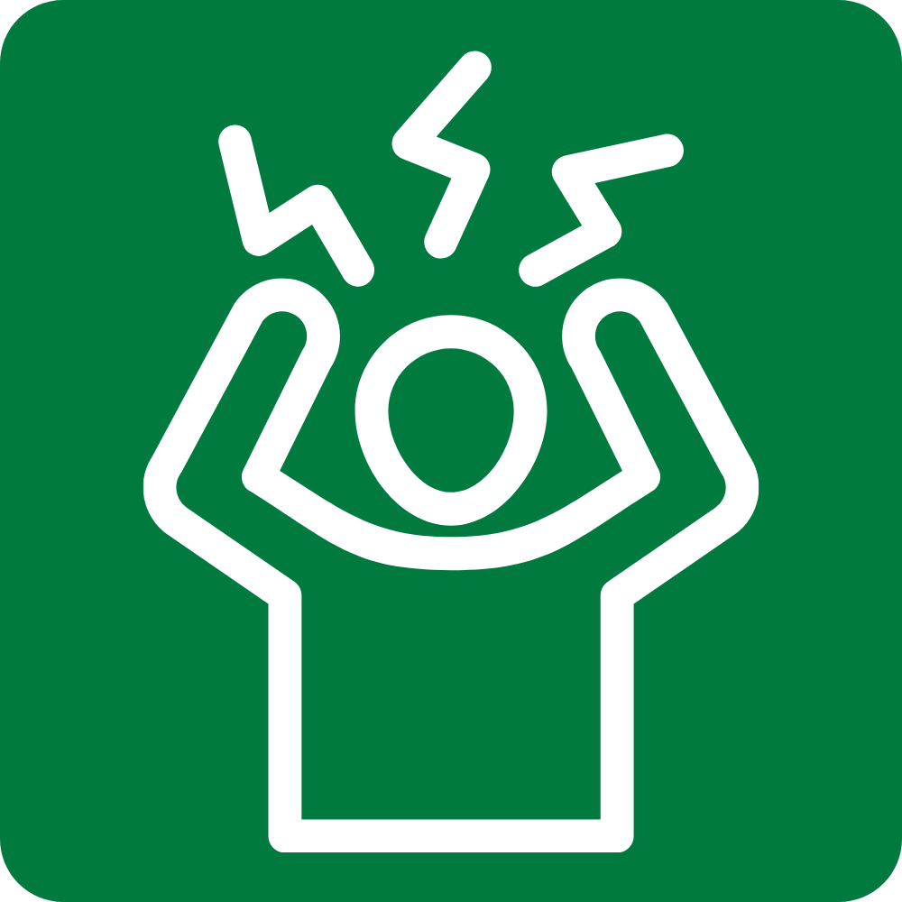

Recognizing PCOS Signs
PCOS symptoms often begin around the first menstrual period but can also develop later, especially after weight gain.

Irregular Periods
Infrequent, irregular, or prolonged cycles.

Excess Androgen
Elevated male hormones causing acne or excess hair.

Weight Changes
Weight gain or difficulty losing weight.

Mood Changes
Anxiety, depression, or mood swings.

Skin Changes
Dark patches, oily skin, or skin tags.

Hair Changes
Thinning scalp hair or excess body hair.